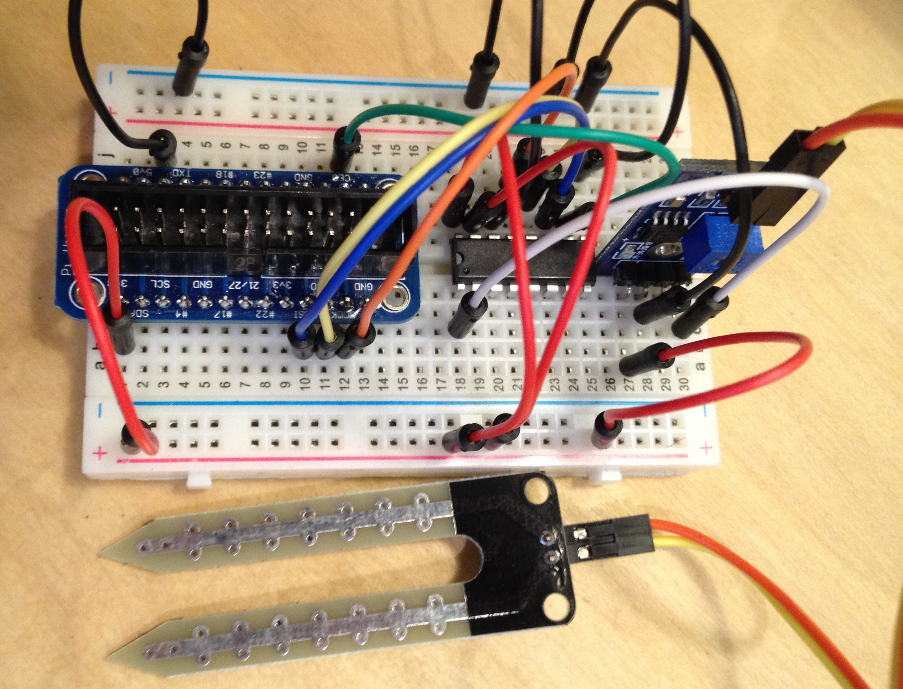
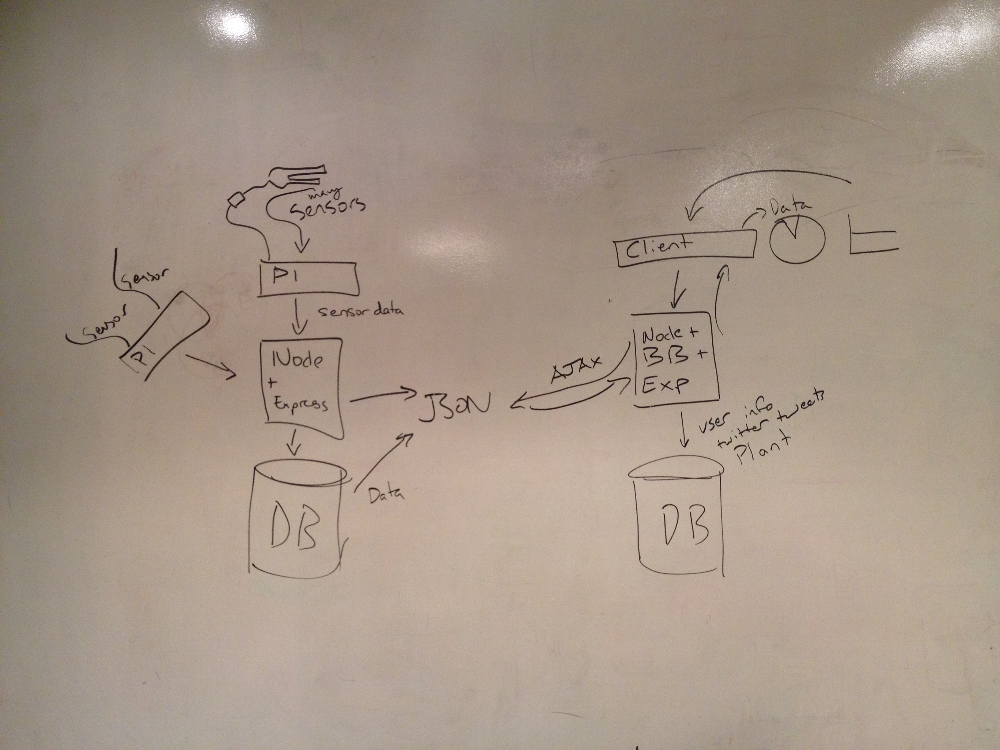

Bike There
Bike There is a bicycle commuting app where a user can search for the best bike path between two points. Bike There searches for a bike path along any rideable routes and will displays the path on Google Maps. In addition to the turn-by-turn direction, Bike There will also display elevation information along that path so that the user can see how steep the path is and choose a different route or drag parts of the route to create new path. When a preferred path is found, a signed in user can save that path and view it again at another time.
Technology
This application is built using the Google Maps API and the Google Elevations API.
Ruby on Rails, JavaScript, jQuery

Anim pariatur cliche reprehenderit, enim eiusmod high life accusamus terry richardson ad squid. 3 wolf moon officia aute, non cupidatat skateboard dolor brunch. Food truck quinoa nesciunt laborum eiusmod. Brunch 3 wolf moon tempor, sunt aliqua put a bird on it squid single-origin coffee nulla assumenda shoreditch et. Nihil anim keffiyeh helvetica, craft beer labore wes anderson cred nesciunt sapiente ea proident. Ad vegan excepteur butcher vice lomo. Leggings occaecat craft beer farm-to-table, raw denim aesthetic synth nesciunt you probably haven't heard of them accusamus labore sustainable VHS.

Good or Evil
Good or Evil is an annonymous posting blog where users can post, comment and rate annonymously. A user can see how other uses view his/her posts as well as how he/she votes other posts.
Technology
This application is built using the Amazon S3, Carrierwave, CanvasJS.
Ruby on Rails, JavaScript, jQuery, AJAX
Team Members
Bruce Lee, Calvin Lam, Joel Brady
Anim pariatur cliche reprehenderit, enim eiusmod high life accusamus terry richardson ad squid. 3 wolf moon officia aute, non cupidatat skateboard dolor brunch. Food truck quinoa nesciunt laborum eiusmod. Brunch 3 wolf moon tempor, sunt aliqua put a bird on it squid single-origin coffee nulla assumenda shoreditch et. Nihil anim keffiyeh helvetica, craft beer labore wes anderson cred nesciunt sapiente ea proident. Ad vegan excepteur butcher vice lomo. Leggings occaecat craft beer farm-to-table, raw denim aesthetic synth nesciunt you probably haven't heard of them accusamus labore sustainable VHS.
Project Lorax
Project Lorax measures the soil moisture level for a plants. A user can register plants which will be monitored by the soil moisture sensor implanted in the soil. Raspberry Pi is used to send the soil data to the service layer server which collects the data. When the soil is dry the service side server will send a request to the client side server which will send a tweet to the user reminding the user to water the plant.
Technology
This application is built using the Raspbery Pi, soil moisture sensor, ChartJS
NodeJS, Express, PostgreSQL, MongoDB, BackboneJS
Team Member
Graham Wong


Project Lorax has a client-side server which is built using NodeJS and MongoDB. Users can login using Twitter OAuth. A user can see their plant and its details as well as add new plants. The plant data is stored in the service-side server which is built using NodeJS and PostgreSQL. The soil moisture is controlled by the Raspberry Pi, which sends the soli data at an interval to the service-side server. Pyhton was used to write the code that controls the Raspberry Pi's behavior.
Project Lorax has a client-side server which is built using NodeJS and MongoDB. Users can login using Twitter OAuth. A user can see their plant and its details as well as add new plants. The plant data is stored in the service-side server which is built using NodeJS and PostgreSQL. The soil moisture is controlled by the Raspberry Pi, which sends the soli data at an interval to the service-side server. Pyhton was used to write the code that controls the Raspberry Pi's behavior.
